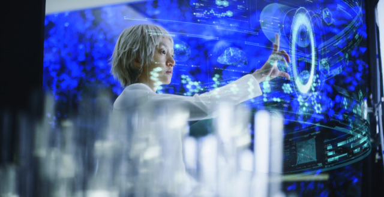
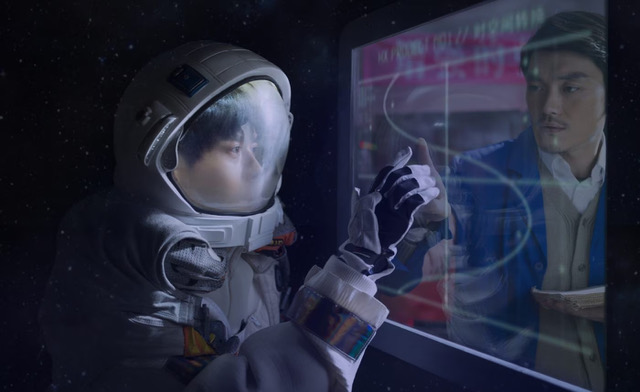
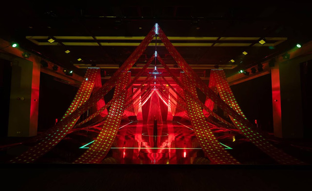
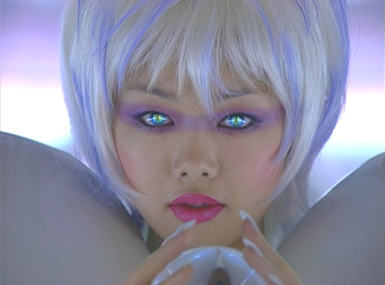
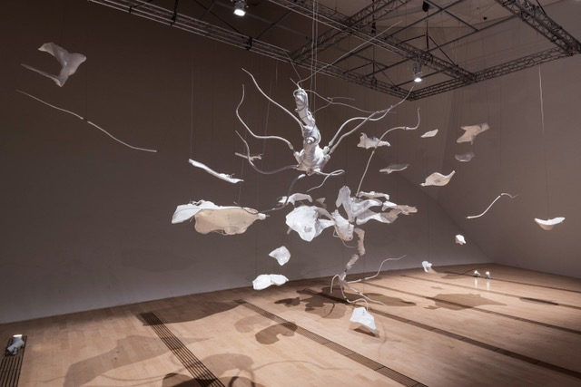
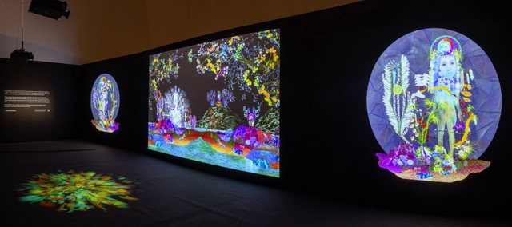

New Eden: Science Fiction Mythologies Transformed brought together 24 Asian women artists and collectives at ArtScience Museum to explore a question that had largely gone unasked: what if Western science fiction's most persistent ideas, alternate dimensions, transcendence, the dissolution of the human form, had deeper roots in Asian philosophical traditions than either culture had acknowledged? Co-curated with Gail Chin, Joel Chin, and Adrian George, the exhibition ran from October 2023 to March 2024.
Organised into eight thematic chapters, from Paradox of Paradise to In a New Light, the show drew connections between speculative fiction and the philosophical frameworks of Buddhism, Hinduism, Taoism, and Shintoism. Mariko Mori's luminous cosmological visions, Cao Fei's explorations of digital culture and dreaming, Lee Bul's cyborg femininities, and Moon Kyungwon and Jeon Joonho's dual-channel narratives of near-future survival were set alongside works by Sputniko!, Saya Woolfalk, Shilpa Gupta, and 16 further artists, each offering a science fiction imaginary shaped by a non-Western cultural inheritance.
The curatorial argument was also an act of redress. Science fiction has been historically dominated by Western, male voices, and the deliberate foregrounding of 24 Asian women reconfigured whose visions of the future we take seriously, and from which traditions those visions draw. New Eden subsequently toured to Science Gallery Melbourne in 2024.

Honor Harger · Gail Chin · Joel Chin · Adrian George
Mariko Mori · Cao Fei · Lee Bul · Sputniko! · Patty Chang · Shilpa Gupta · Moon Kyungwon & Jeon Joonho · Saya Woolfalk · Etsuko Ichihara · The House of Natural Fiber · Club Ate · Astria Suparak · Nguyen Trinh Thi · Anne Samat · Soe Yu Nwe · Fei Yi Ning · Chok Si Xuan
ArtScience Museum, Singapore · Marina Bay Sands · Toured to Science Gallery Melbourne, 2024




